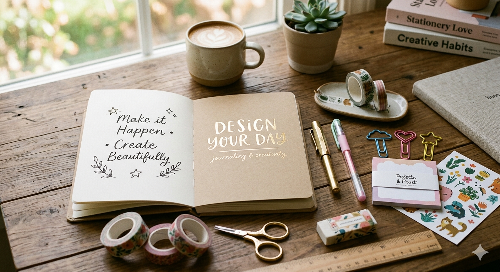

안녕하세요. 저는 조서영이라고합니다.
오늘은 디자인에 대한 저의 생각을 말씀드리고자 합니다.

제 생각에는 디자인에서 가장 중요한 것은 사용자 중심의 접근입니다.
디자인은 단순히 아름다운 것을 만드는 것이 아니라, 사용자들이 쉽게 이해하고 사용할 수 있도록 하는 것이 중요하다고 생각합니다.
또한, 디자인은 문제 해결을 위한 도구이기 때문에, 사용자의 요구와 기대를 충족시키는 것이 중요하다고 생각합니다.